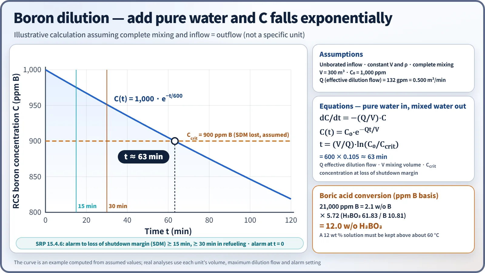
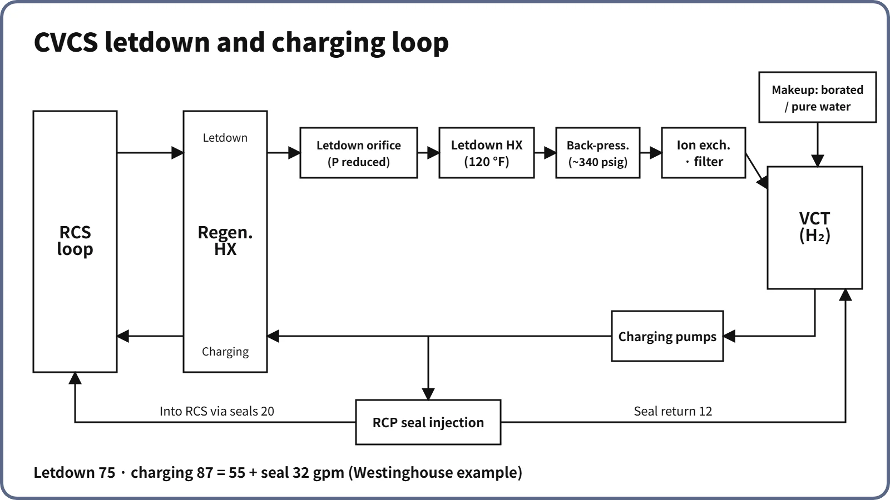

Systems & Equipment · C-SY-012
Chemical and Volume Control System (CVCS) — The RCS Auxiliary System That Handles Inventory, Boron and Water Chemistry Through Letdown and Charging
Letdown, purification and charging: the flow balance that holds pressurizer level, the VCT, boron control and the boron dilution event.
The chemical and volume control system (CVCS) is an auxiliary system that continuously draws off part of the RCS coolant (letdown), purifies and adjusts it, and returns it (charging), so as to manage the coolant inventory (pressurizer level), the boron concentration and the primary water chemistry. It also supplies RCP seal injection and pressurizer auxiliary spray.
Principle and mechanism
Functions and subsystems
The NRC's public Westinghouse-type training manual lists the purposes of the CVCS as follows [1].
- Boron concentration control: compensate for burnup, xenon and temperature changes and secure shutdown margin (boration and dilution).
- Inventory control: together with the pressurizer level control system, adjust charging to hold the RCS water inventory. Let down excess coolant during heatup and power increases, charge during cooldown and power reductions, and make up normal leakage.
- RCP seal injection.
- Corrosion-inhibiting chemical addition: pH (LiOH) and oxygen control (hydrazine when cold, hydrogen at power).
- Purification: filtration and ion exchange keep coolant activity within design limits.
- Borated water for emergency core cooling (in designs where the charging pumps double as high-head safety injection pumps).
- Processing through the boron recovery system so that boric acid and makeup water can be reused.
- Degassing of the RCS through the VCT vent.
- An emergency boration path.
The number of subsystems depends on how the system is divided. The same manual describes it in six groups: letdown, volume control tank (VCT), makeup and chemical addition, charging (including seal injection), excess letdown, and boron recovery [1]. When quoting a number of subsystems, state the basis of the division.
Flow path and pressure and temperature changes
![Westinghouse-type four-loop CVCS flow path with public-manual values: letdown from the RCS loop at 2,235 psig and 550 °F through the regenerative heat exchanger (to 290 °F), the letdown orifices, the letdown heat exchanger (120 °F) and the back-pressure valve holding about 340 psig, then ion exchangers and filter to the hydrogen-blanketed volume control tank; charging pumps deliver 87 gpm, 55 gpm through the normal charging line and 32 gpm to the RCP seals, of which 20 gpm enters the RCS and 12 gpm returns; balance in 55 + 20 = 75 = out 75 gpm; with boric acid and primary water makeup, chemical addition, auxiliary spray, an image of the tank and pumps, and cards on VCT functions and CE-type and APR1400 values](../../assets/images/concepts/c-sy-012-cvcs/fig1-cvcs-flow-path.webp)
The job of the letdown system is to bring coolant at operating pressure (2,235 psig) and temperature down to the low pressure and temperature that the ion-exchange resin can tolerate. In the Westinghouse-type four-loop example the sequence is [1]:
- Letdown is taken from the crossover (intermediate) section of one loop → two letdown isolation valves (they close on low pressurizer level, 17 %).
- Regenerative heat exchanger (letdown on the shell side): gives heat to the charging water and cools the letdown from 550 °F to 290 °F. The charging water is preheated from 130 °F to 500 °F, which reduces thermal stress at the charging nozzles.
- Letdown orifices: two rated 75 gpm and one rated 45 gpm at 2,235 psig; normally one 75 gpm orifice is in service. They set the letdown flow and provide the first pressure reduction.
- Letdown heat exchanger (component cooling water): outlet controlled at 120 °F.
- Letdown pressure control valve (back-pressure valve): holds the upstream pressure at about 340 psig so that the letdown does not flash upstream of the letdown heat exchanger.
- Temperature divert valve (bypasses the ion exchangers at 137 °F) → mixed-bed ion exchanger (a cation bed is used when lithium or cesium must be reduced) → filter → spray nozzle in the VCT.
- Charging pumps → regenerative heat exchanger (tube side) → charging nozzle, with branches to seal injection and auxiliary spray.
In the normal balance the charging pumps deliver 87 gpm: 55 gpm through the normal charging line and 32 gpm to the RCP seals. Of the seal flow, 5 gpm per pump (20 gpm for four pumps) enters the RCS through the seal area and 3 gpm per pump returns as seal return. On the RCS side, 55 + 20 = 75 gpm in matches 75 gpm of letdown [1].
CE-type plants do it the other way round. A letdown flow control valve modulates letdown on the pressurizer level error (40 gpm at the level setpoint, from 29 to 128 gpm), while three 44 gpm positive displacement charging pumps provide stepwise charging by the number running (one in service normally) [2].
Volume control tank (VCT)
The VCT is the surge tank that receives the letdown [1].
- Level buffer: it takes up the RCS volume changes that follow pressurizer level changes. On high level a three-way valve diverts part of the letdown to the boron recovery system.
- Level interlocks: automatic makeup starts on low level; on a lower level or an ESFAS signal the VCT outlet closes and the charging suction transfers to the refueling water storage tank (RWST).
- Gas control: during operation a hydrogen overpressure dissolves hydrogen into the coolant, which removes radiolytic oxygen in the core. Nitrogen is used to purge the tank during shutdown or maintenance but is not added at power because of possible nitric acid formation. Vent gas goes to the gaseous waste system.
- Charging pump suction head: when venting reduces pressure to 15 psig the vent closes to keep adequate NPSH; the relief valve is set at 75 psig.
The dissolved hydrogen band is a design- and plant-specific operating value; for example, the normal range for the APR1400 is 25–50 cc/kg [6].
Boron control and the boric acid evaporator
The makeup system blends concentrated boric acid from the boric acid tanks with demineralized water and sends it to the VCT or the charging pump suction. There are five modes: borate, dilute, alternate dilute, automatic and manual [1]. Near the end of the cycle the boron concentration approaches zero and the dilution volume becomes very large, so some plants remove boric acid directly with deborating ion exchangers [1].
The boric acid evaporator first strips dissolved gases from the recovered borated water; in the evaporator section the water leaves as vapor and the essentially non-volatile boric acid stays as a concentrate. The condensate is purified and reused as makeup water, and the concentrate is sent to the boric acid tanks [1].
Boric acid tank concentration varies by design. The manual's reference plant stores about 4 wt % boric acid (7,000 ppm boron) with the room kept above 65 °F, and notes that plants with 12 wt % systems need electrical heat tracing [1].
As a worked conversion, a concentrate of 21,000 ppm (ppm B, by mass of solution) is 2.1 w/o B, which as boric acid is 2.1 × 5.72 ≈ 12.0 w/o H₃BO₃. The solubility of boric acid is about 4.5 wt % at 20 °C, so a 12 wt % solution must be kept above about 60 °C to prevent precipitation.

What it means in a plant
Design differences by reactor type
| Item | Westinghouse four-loop | CE type | APR1400 |
|---|---|---|---|
| Letdown control | Orifice selection (75, 75, 45 gpm) | Flow control valve, continuous | Orifices + back-pressure control (400 psig) |
| Charging control | Centrifugal charging pumps + flow control valve | Positive displacement 44 gpm × number running | Charging pumps; charging set by level control |
| Relation to safety injection | Centrifugal charging pumps double as high-head safety injection | Separate HPSI system | Charging system is not an ESF system |
An APR1400 normal-condition analysis case uses RCS 2,250 psia and 585 °F, letdown 80 gpm, charging 93 gpm and seal injection 6.6 gpm per RCP [3]. Seal injection is supplied by one of two charging pumps or by an auxiliary charging pump; the auxiliary pump is not affected by a loss of component cooling water and so provides a diverse means of seal injection [4]. The auxiliary charging pump can be powered from the alternate AC source during a station blackout [5].
Operation and safety
- Startup (cold): hydrazine is used for oxygen control while the plant is in cold shutdown [1] → form the pressurizer steam bubble → change the VCT over to a hydrogen cover gas → dilute before criticality.
- Shutdown: purge the VCT with nitrogen, borate to the cold-shutdown concentration, and depressurize with auxiliary spray after the RCPs stop.
- Lithium management: lithium builds up through B-10(n,α)Li-7 and is removed by the cation ion exchanger [1]. Coordinated B–Li operation lowers lithium as boron decreases to keep the high-temperature pH constant.
- Water chemistry limits (older technical specification 3/4.4.7 format, e.g. Vogtle Unit 1): dissolved oxygen 0.10 ppm steady-state and 1.00 ppm transient (not applicable at Tavg of 250 °F or below); chloride and fluoride 0.15 and 1.50 ppm each [9]. The concern is stress corrosion cracking of stainless steel (by chloride and fluoride, accelerated when oxygen is present). Improved standard technical specifications moved chemistry out of the specifications into a plant program.
Boron dilution event
A boron dilution event is one in which pure water enters at maximum flow because of a makeup control error or a valve failure. Assuming complete mixing and inflow equal to outflow, C(t) = C₀·exp(−Qt/V), and the time to reach the concentration at which shutdown margin is lost is t = (V/Q)·ln(C₀/Ccrit). With illustrative assumptions (unborated inflow, constant volume, complete mixing, constant density) of V = 300 m³, effective dilution flow Q = 132 gpm (0.500 m³/min), C₀ = 1,000 ppm and Ccrit = 900 ppm, t = 600 × 0.105 ≈ 63 minutes. If the alarm sounds at t = 0, this comfortably exceeds the 15-minute SRP criterion [7]. Operators detect the dilution through alarms (for example on rising neutron flux) and the integrated makeup flow.
Regulatory and design criteria
The criteria below are examples from the United States (US NRC).
| Basis | Key point |
|---|---|
| GDC 14, 29, 33, 35; SRP 9.3.4 | Prevention of pressure-boundary corrosion (water chemistry); reactivity control in AOOs; makeup for small leaks; high-pressure ECCS injection (in dual-purpose designs) [8] |
| 10 CFR 50.63; NUREG-0737 III.D.1.1 | SBO coping (seal injection and makeup); reduction of leakage outside containment |
| SRP 15.4.6 | Boron dilution: at least 30 minutes from alarm to loss of shutdown margin during refueling, 15 minutes otherwise [7] |
Easily confused pairs
| CVCS charging | High-pressure safety injection (HPSI) | Shutdown cooling (SCS) | |
|---|---|---|---|
| Purpose | Inventory, boron, water chemistry | Core cooling in a LOCA | Decay heat removal at low temperature and pressure |
| Operation | Continuous | On demand (SIAS) | Second stage of cooldown |
| Class | Mostly non-safety | Safety class | Safety class |
Key points at a glance
- Definition: an auxiliary system that manages RCS inventory, boron concentration and water chemistry through letdown and charging.
- Functions: pressurizer level control, boration and dilution, pH (LiOH) and oxygen (H₂, N₂H₄) control, purification, RCP seal injection, auxiliary spray.
- Letdown (Westinghouse example): crossover leg → regenerative HX (to 290 °F) → orifices (pressure reduction) → letdown HX (120 °F) → back-pressure valve (about 340 psig) → ion exchangers and filter → VCT.
- Charging: VCT → charging pumps → regenerative HX (to 500 °F) → RCS, with a seal injection branch.
- Balance example: charging 87 = 55 + seal 32; RCS in 55 + 20 = letdown 75 gpm.
- VCT: H₂ cover gas, N₂ purge at shutdown, automatic makeup on low level, diversion on high level, RWST suction on low-low level, charging NPSH.
- Boric acid: factor 5.72; 21,000 ppm B = 12.0 w/o H₃BO₃; the evaporator separates water from boric acid by evaporation.
- Design differences: Westinghouse orifices and centrifugal pumps (also HHSI); CE flow control valve and positive displacement pumps; APR1400 charging not ESF, auxiliary charging pump.
- Safety: boron dilution 15/30 minutes; letdown isolation (low pressurizer level, containment isolation).
